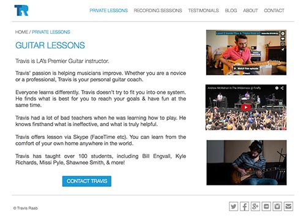
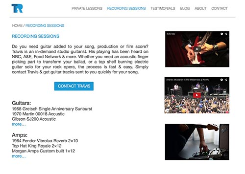
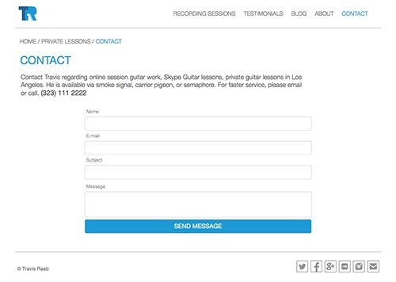
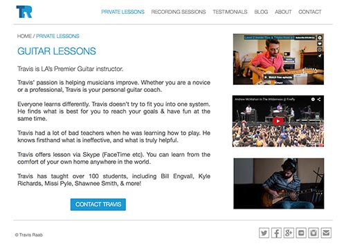
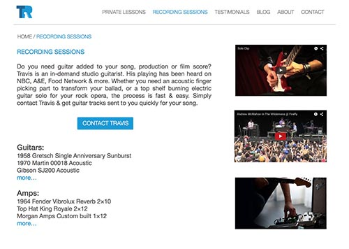
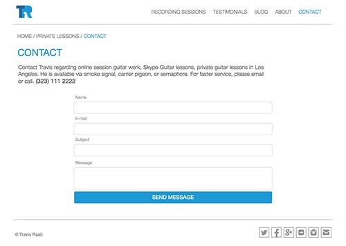
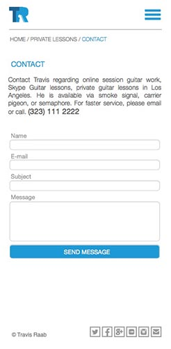
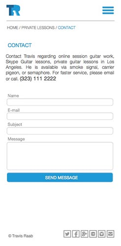

Travis has performed with major label artists like Katharine McPhee, Sean Kingston, and Andrew McMahon. He was the house band guitarist on the CW TV show 'Oh Sit!', has performed on the Jay Leno Show and you've heard his playing on HBO, KROQ, NBC, Food Network. He is available for recording sessions & lessons over the internet.
www.travisraab.com
The goal of this project was to improve website performance by reducing information, simplifying layout and highlighting provided services.
 





 
